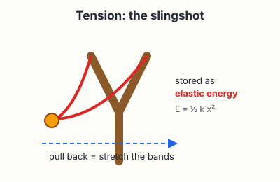
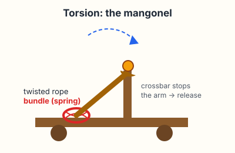
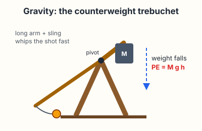

Engineering · Simple Machines · Energy · Projectile Motion
Siege Engines: Physics You Can Launch
For 2,400 years, engineers built machines to throw things farther than any arm could. Every one of them works the same way: store energy slowly, then let it go all at once. In this lesson you'll learn the three ways to store that energy, test designs in a launch lab, and then build your own launcher out of craft sticks, cardboard and rubber bands.
These are real machines. Small ones can still hurt an eye.
Soft ammo only: mini marshmallows, pom-poms, cotton balls, crumpled paper, ping-pong balls. No rocks, marbles, coins, pencils or anything sharp.
Never aim at a person, a pet, or a window. Launch toward a wall or an empty target zone.
Wear safety glasses when you load or launch, and so does anyone standing nearby.
Say "Clear!" before every launch, and wait until nobody is in front of the machine.
Keep fingers out of the arm's path. Rubber bands and counterweights snap back hard.
At home, build with an adult nearby, and ask before you cut anything.
Three ways to store energy
A siege engine is an energy converter. You put in work slowly: pulling, twisting or lifting. The machine stores it as potential energy, and on release it turns that energy into the kinetic energy of the flying shot. Engineers have only ever found three good ways to store it:

1. Tension (stretching) Slingshots, crossbows and the Greek ballista store energy in something stretched: a bow or a band. Stretch it twice as far and it holds four times the energy (E = ½kx²).

2. Torsion (twisting) The Roman onager and the mangonel twisted thick ropes of hair or animal sinew. The twisted bundle is a spring; when released it whips the arm up until it hits a crossbar.

3. Gravity (lifting) A trebuchet lifts a heavy counterweight. When it falls, the beam acts as a lever: the short arm moves slowly with lots of force, the long arm moves fast. A sling on the end adds even more speed.
Why the trebuchet won
Ropes and bands lose their spring when they get wet, cold or old. A rock weighs the same in the rain. And to throw a bigger stone, you just add more weight to the box. That's why the biggest medieval engines were trebuchets, and why the trebuchet is a great machine for learning about levers and conservation of energy.
Once the shot is in the air, the engine doesn't matter any more. Every shot follows the same trajectory rules from kinematics: launch speed and launch angle decide where it lands. With no air in the way, 45° goes farthest.
2,400 years of throwing machines
Dionysius I of Syracuse gathers engineers who build the gastraphetes ("belly bow"), a giant crossbow braced against the stomach, and early arrow-throwing catapults.
Greek engineers under Philip II of Macedon switch from bows to twisted rope springs (torsion). The machines get much more powerful.
Chinese texts describe the traction trebuchet: a beam on a pivot, pulled down by a team of people tugging ropes instead of a falling weight.
Archimedes designs machines that defend Syracuse against the Roman fleet for about two years.
The Roman engineer Vitruvius writes that every part of a catapult should be sized from the diameter of its spring hole: one of the first engineering design rules.
The Roman historian Ammianus Marcellinus describes the onager ("wild donkey"), a one-armed torsion catapult named for its violent kick.
Traction trebuchets are used at the siege of Thessalonica, after spreading west from China across Asia.
Engineers in the Mediterranean world replace the rope-pullers with a heavy counterweight. Now a machine can throw stones of 100 kg or more.
Edward I of England builds the giant trebuchet "Warwolf" at the siege of Stirling Castle in Scotland.
Ottoman cannons break the walls of Constantinople. Gunpowder replaces the trebuchet as the way to knock down walls.
Charles Goodyear patents vulcanized rubber, which stays stretchy in heat and cold. Rubber-band slingshots become possible.
The first "Punkin Chunkin" contest is held in Delaware. Teams now build trebuchets, catapults and air cannons just to throw pumpkins.
Engineers still build trebuchets to teach energy, levers and design, and you're next.
Launch lab
Test designs before you build. Choose a machine, change one setting at a time, and launch. The numbers are sized for classroom models built from the kinds of parts in the builds below. Try the Target challenge to practise aiming.
–energy stored
–launch speed
–distance
–highest point
–energy that reached the shot
Investigate
Turn air resistance off. Which launch angle goes farthest? Now turn it on and fire a pom-pom. Does the best angle change?
On the trebuchet, keep the counterweight the same and change the arm ratio. Why doesn't a longer arm always throw farther? (Hint: watch "energy that reached the shot". The arm has to speed itself up too.)
On the slingshot, double the stretch. What happens to the stored energy? To the launch speed?
A clay ball is heavier than a marshmallow. Which goes farther from the same machine, and why?
Build your own
Pick one build. All three work at a desk or a kitchen table and cost almost nothing. Read every step before you start.
Build A: Craft-stick catapult
Easiest · 20 minEnergy: tension
You need
9 jumbo craft sticks
6–8 rubber bands
1 plastic spoon or a bottle cap
Masking tape or a glue dot
Soft ammo
Steps
Stack 7 sticks and wrap a rubber band tightly around each end. This is the fulcrum block.
Put the other 2 sticks together and band them at one end only. Open them into a V.
Slide the stack between the two sticks of the V, close to the banded end.
Cross a rubber band around the place where the stack meets the V, in an X, so it holds firm.
Tape or band the spoon to the end of the top stick. That's your throwing arm.
Load, say "Clear!", press the spoon down and let go.
Experiment: slide the stack closer to or farther from the banded end. Which way throws higher? Farther? You're changing the lever's fulcrum.
Build B: Shoebox trebuchet
Medium · 45–60 minEnergy: gravity
You need
A shoebox or 2 pieces of stiff cardboard (sides)
1 wooden dowel or round pencil (the axle)
1 ruler or paint stirrer, about 30 cm (the beam)
A small paper cup, tape, and coins or washers (counterweight)
String, a paper clip, and a 10 × 15 cm piece of cloth or a cut-up sock (the sling)
Scissors (adult help), a hole punch or a sharp pencil
Steps
Cut the lid off the box. Poke a hole in each long side, the same height, about 4/5 of the way up. The dowel goes through both holes.
Tape the beam to the dowel about 1/4 of the way along it. The short end is for the weight, the long end for the sling. (That's a 3 : 1 arm ratio.)
Hang the cup from the short end with string, so it can swing. Add coins.
Tie a string to each side of the cloth to make a pouch. Tie one string tightly to the long end. Make a loop in the other string.
Bend a paper clip into a small hook and tape it to the very tip of the long end, pointing forward. The loop slips over this hook.
Lay the pouch with the ammo along the floor of the box, under the machine. Hold the long arm down, say "Clear!", let go.
Tuning: if the shot flies straight up or backward, the loop slips off too late: bend the hook forward (more open). If it slams into the floor, it lets go too early: bend the hook up. The hook angle sets your launch angle, just like the slider in the lab. Adding coins is the easiest way to throw farther.
Build C: Cup slingshot
Easiest · 10 minEnergy: tension
You need
1 paper or plastic cup
1 balloon
Scissors and tape
Pom-poms only (lightest and safest)
Steps
With an adult, cut the bottom out of the cup.
Tie a knot in the balloon's neck, then cut off the top of the round end.
Stretch the balloon's open end over the bottom of the cup, knot pointing out. Tape it in place.
Drop a pom-pom in the cup, aim at the target zone, pull the knot back, and let go.
Experiment: mark the knot's pull distance on a ruler: 2 cm, 4 cm, 6 cm. Does doubling the pull double the distance? Compare with the slingshot in the lab.
Class contests
Distance: 3 shots each, best one counts. Measure from the front of the machine to where the shot first lands.
Accuracy: tape a target on the floor (bullseye rings at 10, 20 and 30 cm) 1.5 m away. Highest total in 5 shots wins.
Castle siege: stack a paper-cup castle 2 m away. Fewest shots to knock down the top cup wins.
Engineering award: the team that shows the best fair test (below) and explains its change wins, whatever the distance.
Run a fair test
Engineers improve a machine by changing one thing at a time and keeping everything else the same. Pick one variable (counterweight, pull distance, hook angle, fulcrum position or ammo), test 3 settings, and do 3 launches at each one.